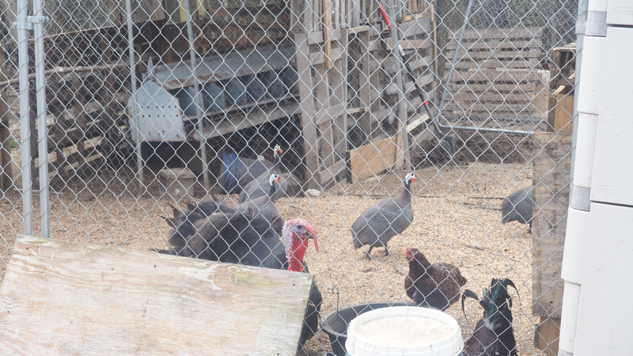

People ask us all the time: why off-grid? Why leave behind the convenience of modern life for solar panels, composting toilets, and well water? The honest answer is that it wasn't one big decision — it was a hundred small ones that all pointed the same direction.
It Started with a Question
A few years ago, we started asking ourselves what we actually needed versus what we'd been told we needed. The more we looked at our monthly bills, our commute, our consumption patterns, the more we realized we were working to maintain a lifestyle that wasn't making us happy. Something had to change.
Finding the Land
When we found this property, it was raw land with potential. No electricity, no plumbing, no road access. Most people saw problems. We saw freedom. We started with a tent, then a small structure, then another, gradually building the infrastructure that would become Jam Mission.
The Animals Came Next


First it was chickens for eggs. Then goats because — well, have you met a goat? They're impossible not to love. Then turkeys, guinea fowl, and sheep. Before we knew it, we had a whole little ecosystem going. The animals became the heart of everything we do here.
Sharing the Mission

At some point, friends started visiting and asking if they could camp on the property. Then strangers found us. Then people wanted to bring their kids to see the animals. That's when we realized this wasn't just our project anymore — it was something worth sharing.
Jam Mission exists because we believe everyone deserves a chance to slow down, touch the earth, and remember what life feels like when you strip away the noise. Whether you come for an hour or a week, we hope you leave feeling a little lighter.
If you're curious about off-grid living, thinking about starting your own homestead, or just want a weekend away from screens — come visit. We'll put the kettle on.